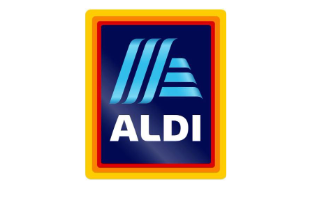

Marketing strategic planning: a case study on Aldi
Introduction
Marketing mix strategic planning provides an opportunity to the organisations to develop effective tactics for successful promotion of the companies through which the firms can expand their business across the globe (Huang and Sarigöllü, 2014; Mohammad, 2015). The aim of the study is to analyse the marketing mix strategic planning of Aldi and Tesco and after proper evaluation, the study also provides a scope to develop an effective marketing planning for Aldi so that they can expand their business across the international business. The marketing planning of Aldi is important for running their business activities across the global markets and gain high competitive advantage over other competitive firms in the market.
Overview of the organisation
Aldi is a German based discounted supermarket store which is famous due to its quality products including home appliances, household goods food, beverages and sanitary articles. The company is effective in delivering high quality products to the customers at affordable price. The employees are efficient in providing high quality service to the customers and the company operates ion different international markets including Australia, Italy, France, Denmark, China, Belgium, Australia, Ireland, Spain, Portugal, United States and United Kingdom (Aldi, 2018). On the other hand, Tesco is also another discounted supermarket where the company also operates across the international markets. Both the companies are operating in the retail sector across the globe by delivering quality products and efficient service to the customers and both the firms are competitors to each other.
Aldi has a clear principle of doing the business internationally which is to provide top quality at incredibly low price. The company has five ideologies for doing the business internationally which are,
- Huge savings
- Buy with confidence
- Excellent quality
- Outstanding value
- Super special buys
Key roles and responsibilities of marketing manager
The marketing managers play a crucial role in developing effective marketing tactics through which the companies and gain high competitive advantage over other competitive brands (Breugelmans and Campo, 2016). The marketing managers try to analyse the market condition to acknowledge the needs and preferences of the customers so that it is possible for the brands to satisfy the customers and strengthen their consumer’s base in long run (Fan, Lau and Zhao, 2015; Phan, and Vu, 2015). The marketing manager also aims at maximising the profit volume of the firms by promoting their products at international level and targeting the customers successfully (Ramanathan, Subramanian and Parrott, 2017). Creating an effective marketing plan is also the role of the marketing managers and apart from that the marketing manager is responsible for innovative process through which the company Aldi can expand their business internationally and gain high competitive advantage. In addition to these, bran management, product line management and brand equity management are the roles of the marketing manager in Aldi. The marketing manager of Aldi also focuses on improving customer’s service through creative thinking skill so that they can satisfy the customers.
Ways marketing interrelates and influences the functional departments of the organisations
Marketing mainly interrelates and influence the functional departments of the organisations as the activities and strategic planning of marketing motivates other departments to work cooperatively and improve efficiently to meet the organisational objectives. The marketing departments influence the sales department of the organisation for example Aldi where the sales persons of the retail firm aim at improving interaction with the customers and retain them for long run. The ales representatives of Aldi try to motivate the customers and influence their purchasing behaviour for the organisational quality products and services. On the other hand, marketing tactics also influences the data analysts on the organisation for conducting more research and development in order to understand the recent market trends and acknowledge the taste and preferences of the local people. The marketing tactics of Aldi also encourages the production department of the organisation Aldi for manufacturing different products so that it is possible to increase the product line o the company and satisfy the customers by delivering the quality products as per their needs and preferences. The line managers of the company are also influenced by the marketing management as it provides suitable information to deal with the customers and maximise the customer’s service in long run. Customer centric business model in this regard provides a scope to Aldi to improve the organisational performance as a whole and utilise the marketing strategies in order to meet the organisational aims and objectives.
Value and importance of marketing role
There are effective values of the marketing roles in the organisations as it provides an opportunity to the companies to expand their operational activities across the globe. The organizations can promote the brand in effective market and provide suitable information to the customers so that it is possible for the managers to retain the customers for their quality products and services. Through marketing, the organisations also can promote their variety of products and increase the product line successfully where they can attract more social communities as a whole. Strengthening physical distribution of the products as well as improving green supply chain is also possible through which the companies can establish their business successfully at effective market. In the present case, there is a significant role in the organisation Aldi in order to promote theory products at international markets and gain competitive advantage in the global retail industry. Through marketing tactics, Aldi aims at improving their market share and strengthening the customer’s base. The marketing tactics also provide a scope to create values for the customers as well as for the organisations. The marketing tactics of Aldi helps to maximise the sales volume and profitability of Aldi as well as it helps to improve brand image and reputation in the market. Hereby, marketing plays a crucial role for Aldi in establishing the brand in effective market and retain the local people across the international retail industry for sustainable growth of the business.
Comparing the marketing mix strategies of Aldi and Tesco (P3, M3)

The marketing mix strategic planning is important for both the companies Tesco and Aldi where Tesco is the competitor of Aldi. The comparison of the marketing strategic planning of the companies is essential in this regard to analyse the existing planning for promote their products in the market (Goworek, McGoldrick and McGoldrick, 2015). The marketing mix strategies of Tesco and Aldi are discussed below,
Product
Product is one of the main categories of the entire firms through which it is possible for the companies to establish the firm at international level (Hanssens et al., 2014). In this regard, both the firms Tesco and Aldi operate in the retail sectors and the products are almost similar such as clothing, home ware appliances, fresh fruits and beverages, household goods, soft tools, electronic products and health and beauty products. In this regard, both the firms try to deliver quality products to the customers so that it is possible for them to gain high competitive advantage. Tesco in this regard also aims at product diversification for targeting different segment of customers by increasing their product line and for this the company gains high market share as compared to Aldi. Both the companies are concerned about customer service efficiency so that they can maximise the customer’s values successfully. Tesco has wider variations of product as compared to the products offered by Aldi and hence as per the product concerned, Tesco has more opportunities to expand their business successfully through product diversification strategy.
Price
Price is another factor through which it is possible to target the audiences in different international market (Helm and Gritsch, 2014). In this regard, the discounted stores aim at setting low price for the quality products and services. Discounts and gift vouchers in this regard are also beneficial to target the audiences and influence their purchase intention. Both the organisations, Tesco and Aldi focus on the lower price so that the customers can afford the products. The strategy of setting low price is beneficial for both the firms to target the customers and strengthen their customer’s base for long run.
Place
Placing the products is also a necessary factor through which the companies can distribute the products successfully in efficient market (Harrington, Ottenbacher and Fauser, 2017). In this regard, Aldi mainly focuses on the physical stores through which the visibility of the organisational products and availability of the products can be improved where the customers in the local market can access the products successfully. On the other hand, Tesco also focuses on the physical stores in different international markets for distributing their products and improving visibility of the organisational products. In addition to these, Tesco also focuses on e-commerce facilities for placing their products successfully in effective market as per the market demand and customer’s preferences and within effective time. Distribution channel of Tesco is also efficient through which the company tries to satisfy the customers by delivering quality products at right place within proper time. Comparing the numbers of stores, Tesco has huge number of physical stores in different international countries where Aldi is also successful in expanding their business through physical stores but it has lower number of stores as compared to Tesco. Tesco has more number of customers who purchase through online website of the company and as compared to Tesco, Aldi has also online customers but the number of the customers making purchase online is lower.
Promotion
Promotion is another important factor for improving brand visibility in the market where promotional activities of both the firms Aldi and Tesco are beneficial for the companies to establish the brand sat effective international markets. Promotional activities such as billboards, social media campaigning, television advertisement, email marketing and personal selling are important for the companies to establish the products successfully (Aras et al., 2017). However, Aldi invest very little amount of money in the promotional activity for which it is quiet difficult for them to strengthen their customer’s base in log run. As compared to Aldi, Tesco invests large amount of money for promoting their brand sat international level (Phan and Vu, 2015). Tesco focuses on improving market communication through interaction with the customers which is beneficial for improving loyalty and trust among the customers and retain them for the quality products and services for long time. Tesco tries to utilise their website as well as promote the products through online social media which is absent in case of the promotional strategy of Aldi where the company Aldi only promotes their products through their website.
People
Employees are the main stakeholders of all the corporate firms where they contribute efficiently to achieve the organisational goals and objectives (Yu, Ramanathan and Nath, 2014). Both the firms, Tesco and Aldi focus on managing their employees and other staff members who are engaged with the production and distribution of the organisational products and services. Tesco provides effective training and development program to the employees so that they can improve their technical skill and experience for working proficiently. On the other hand, Tesco provides safety and security to the employees as well as give them incentives and performance related pay top retain them for long run. On the other hand, Aldi also provides training to the staff members for improving organisational performance and manage people by satisfying them and maximising their values. As per the staff members, Tesco has more staff members in heir retail stores as compared to the staff members hired in Aldi and thus it is quiet beneficial for the company Tesco to provide quality service to the customers due to efficient staff members in every stores. The staff members in both the stores of Tesco and Aldi are efficient to deal with the customers and they respect the customer’s preferences and help them to find out the best quality products which can meet the satisfaction level of the buyers.
Physical evidence:
Physical evidence is another factor which needs to be improved by the organisations in order to promote the organisations successfully (Melis et al., 2015). The store outlook in this regard also matters in this regard where Tesco has more effective store outlook where the staff members are cooperative and help the customers to make purchase decision. On the other hand, the company Aldi also focuses on improving their service quality so that it is easy to promote the brand at international level.
Process
Process is also another important factor that contributes in achieving the organisational goals and objectives and in this regard, the companies Tesco and Aldi also try to conduct more research and development so that they can establish their brand at international level and promote the products successfully. Tesco develops innovative technology to serve the customers and self service technique in this regard is useful to retain the consumers and improve customer’s loyalty. Aldi on the other hand, also aims at develop customer centric business model to create values for their consumers. Tesco provide quicker service as compared to thy customer’s service facilities in Aldi and both the firms have self service option where the customers can have more options for check out. As per the above analysis related to the marketing mix planning of Tesco and Aldi, it can be stated that, Tesco is more efficient in developing their marketing planning as compared to the company Aldi. Aldi needs to develop proper planning for successful promotion of the brand at international level so that they can create values for the customers and expand their business worldwide.
Marketing planning for Aldi
Company background:
Aldi mainly focuses on providing quality products to the customers so that it is possible for the company to retain the consumers and strengthen their customer’s base for long run. The main products of the company are such as clothing, apparels, home ware appliances, health and beauty products, electronics products and the daily necessary products which are useful of the company to target the customers and influence their purchase intention. The company is successful in generating profitability and improving sales volume by their products and it is beneficial for the company to invest more for research and development as well as promotional strategies to expand their business internationally. The goal of the company Aldi is to promote the products and strengthen their customer’s base for gaining competitive advantage and establishing the brand worldwide.
Target customers
It is beneficial for the company to target the customers by considering their age, gender, demographic background, culture, values and beliefs. In this regard, the company needs to consider the households where it is beneficial to attract the women and influence their purchase decision. The company must focus on the age group between 25 to 45 years, where it may retain the customers for long run. It is beneficial for the company to deliver quality products and retain them for variety of products.

The company in this context target the housewife, women aged 25 years and above and the high and upper middle income class where they can afford the products of the company. This demographic segmentation is beneficial for the company to target the customers successfully. After that, as per their geographic segmentation, the organisation must focus on the cities and urban areas where they can expand their business and retain the local people efficiently. As per the behavioural segment, the company needs to target the customers who are quality driven where the people can understand the quality of the company Aldi and they are willing to pay for the quality products.
Unique selling price
Unique selling price is necessary for Aldi where the company can expand their business and satisfy the customers as well as gain high competitive advantage over other competitive firms operating in the market such as Lidl and Tesco. In this regard, the company Aldi needs to offer the customers free home delivery for nearby places so that it is possible to retain the local people across the international markets. Moreover, the company needs to set lower price as well as provide coupons and gift vouchers for special occasion. Moreover, free parking zone in the physical stores of Aldo is another effective strategy to retain the old as well as new customers. On the other hand, the company needs to provide free Wi-Fi connection in their stores to the customers so that the customers can enjoy their shopping and make effective purchase decision.
Pricing is one of the effective factors in developing marketing planning through which the organisations can target the customers and influence their purchase decision making behaviour. In this regard, the company tries to understand the perception of the customers in the international markets so that they can target the customers where the purchase intention is high. The company is a discounted retail firm and it is beneficial for the organisation Aldi to set lower competitive price for their quality products so that the customers can afford that products and the organisation can retain them for long run. the company needs to focus on cost effectiveness and improving the economies of scale so that the production cost can be minimised and the company can set lower price for their quality products, additionally, positioning strategy of the company needs to be conducted in a cost effective manner so that Aldi can expand their business strategically. In order to positioning the company, it is necessary to provide gift vouchers, discount coupons on special occasions like Christmas.
Distribution planning
In order to distribute the products of Aldi, it is necessary for the company to strengthen their supply chain and retain efficient distributors who are able to distribute the organisational products safely. In this regard the company also needs to focus o packaging of the products and manage warehouse so that the products can be stored safely. The company also develops Information technology and implement Enterprise Resource Planning (ERP) system for tracking the suppliers and distribute the products directly to the customers. In order to strengthen the distribution network, the company can enter into the contract of joint venture with Amazon and Morrison which will be beneficial for the firm to expand their business across the international nations. Amazon is a good platform for the company where the supply chain and distribution network of Amazon can be utilised for distribution the products of Aldi.
Promotional strategy
The company needs to invest more for the promotional activities so that it is possible for the brand Aldi to provide effective information and news related to the products, price and organisation to the customers. The company Aldi needs to promote the products through press release where proper information related to price and quality of the products as well as durability and necessity of the products can be discussed in front of others. This is an effective strategy for promoting the products in the society. Moreover, television advertisement is another tactic through which Aldi can retain the customers in the local market. In the promotional planning, the customer loyalty program is another effective tactics which may provide a scope to Aldi to build strong corporate relationship with the customers across the global retail markets. The company needs to promote the customer loyalty cards and include points over the purchasing frequency of the customers. Higher points of the cards indicate that the customers will get better discount. This scheme is beneficial for Aldi to promote their brand at effective market where the customers will be willing to purchase the products from Aldi.
Online marketing strategy:
Online marketing strategic planning is necessary for Aldi in order to improve the position of the brand in the international retail market and gain effective competitive advantage in long run. In this r4egard, social media advertisement is necessary which provides a scope to the company to develop two ways communication with the customers and it further helps to improve the quality of customer service. the key words that may help the organisation Aldi to promote the products are such as ‘Affordable to the customers, ‘Lower price’, ‘Quality products’, ‘maximising customer’s values’ and ‘improving satisfaction of the stakeholders’. The company needs to upload short live videos and pictures in Facebook where it is possible to spread the information about the company across the social communities. The company also needs to focus on Search Engine Optimisation (SEO) o that the customers can access th the products of Aldi. Moreover, the company needs to share news and information with the customers through arranging social media campaign which is beneficial to strengthen their customer’s base and retaining more audiences in the market. additionally, the company must send personalise email to the customers and manage customer’s data so that it is easy share information related to the offers, discounts and quality products of Aldi. The company needs to invest in the online advertisement agency for promoting the products such as advertisement through E-commerce platform, social media, YouTube and Facebook for retaining more customers. On the other hand, the company’s website must be improved and the marketing manager needs to develop search Engine Optimisation (SEO) so that the customer can identify the brand successfully.

Conclusion
Through the marketing analysis, it can be seen that the company Aldi did not invest adequate amount of money in the promotional activities for which the organisation fails to gain high competitive advantage over Tesco and strengthen the customer’s base. In this regard, the company needs to target the women and housewife aged above 25 years and establish the brand in urban areas. Television advertisement, press release and providing customer’s loyalty cards program are beneficial for the company to promote their products in the new international markets. On the other hand, social media advertisement, campaigning, sending personalise email and improving e-commerce facilities are also beneficial for the company Aldi to achieve success and maximise customer’s value.
Reference List
- Aldi, 2018. About Us. [online] Available at: https://www.aldi.co.uk/corporate-responsibility [Accessed 12 June 2018].
- Aras, M., Syam, H., Jasruddin, J., Akib, H. and Haris, H., 2017, July. The Effect of Service Marketing Mix on Consumer Decision Making. In International Conference on Education, Science, Art and Technology (pp. 108-112).
- Breugelmans, E. and Campo, K., 2016. Cross-channel effects of price promotions: an empirical analysis of the multi-channel grocery retail sector. Journal of Retailing, 92(3), pp.333-351.
- Fan, S., Lau, R.Y. and Zhao, J.L., 2015. Demystifying big data analytics for business intelligence through the lens of marketing mix. Big Data Research, 2(1), pp.28-32.
- Goworek, H., McGoldrick, P.J. and McGoldrick, P.J., 2015. Retail marketing management: Principles and practice. Pearson Education Limited.
- Hanssens, D.M., Pauwels, K.H., Srinivasan, S., Vanhuele, M. and Yildirim, G., 2014. Consumer attitude metrics for guiding marketing mix decisions. Marketing Science, 33(4), pp.534-550.
- Harrington, R.J., Ottenbacher, M.C. and Fauser, S., 2017. QSR brand value: Marketing mix dimensions among McDonald’s, KFC, Burger King, Subway and Starbucks. International Journal of Contemporary Hospitality Management, 29(1), pp.551-570.
- Helm, R. and Gritsch, S., 2014. Examining the influence of uncertainty on marketing mix strategy elements in emerging business to business export-markets. International Business Review, 23(2), pp.418-428.
- Huang, R. and Sarigöllü, E., 2014. How brand awareness relates to market outcome, brand equity, and the marketing mix. In Fashion Branding and Consumer Behaviors (pp. 113-132). Springer, New York, NY.
- Izogo, E.E., Ogba, I.E. and Nwekpa, K.C., 2016. Correlates of the determinants of relationship marketing in the retail sector: the Nigerian case. African Journal of Economic and Management Studies, 7(1), pp.30-53.
- Kajalo, S. and Lindblom, A., 2015. Market orientation, entrepreneurial orientation and business performance among small retailers. International Journal of Retail & Distribution Management, 43(7), pp.580-596.
- Melis, K., Campo, K., Breugelmans, E. and Lamey, L., 2015. The impact of the multi-channel retail mix on online store choice: does online experience matter?. Journal of Retailing, 91(2), pp.272-288.
- Mohammad, H.I., 2015. 7PS marketing mix and retail bank customer satisfaction in northeast Nigeria. British journal of marketing studies, 3(3), pp.71-88.
- Phan, T.T.H. and Vu, P.A., 2015. The impact of marketing mix elements on food buying behavior: a study of supermarket consumers in Vietnam. International Journal of Business and Management, 10(10), p.206.
- Ramanathan, U., Subramanian, N. and Parrott, G., 2017. Role of social media in retail network operations and marketing to enhance customer satisfaction. International Journal of Operations & Production Management, 37(1), pp.105-123.
- Yu, W., Ramanathan, R. and Nath, P., 2014. The impacts of marketing and operations capabilities on financial performance in the UK retail sector: A resource-based perspective. Industrial Marketing Management, 43(1), pp.25-31.